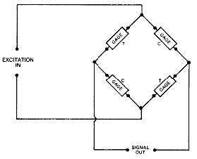

Zero shift with temperature change.
Zero shift with temperature change.Strain Gage Based Transducer reference
The basic strain gage and bridge circuit arrangements shown are usually adequate for low-accuracy do-it-yourself transducers. They can also serve very satisfactorily in integrated transducer/instrument systems where the capability for automatic adjustment, correction, and scaling of the circuit output can readily be incorporated in the instrumentation.

This is not true in general, however, for a large class of precision commercial transducers. The reference here is to transducers of the "stand-alone" type; e.g., off-the-shelf units intended for use with a wide variety of instrumentation systems. To achieve the required accuracy in such transducers, it is necessary to introduce auxiliary or supplementary resistors into the circuit as means for adjusting the circuit output and compensating for the effects of temperature changes.
There are four principal aspects of transducer behavior that commonly require such "tuning".
Zero shift with temperature change.